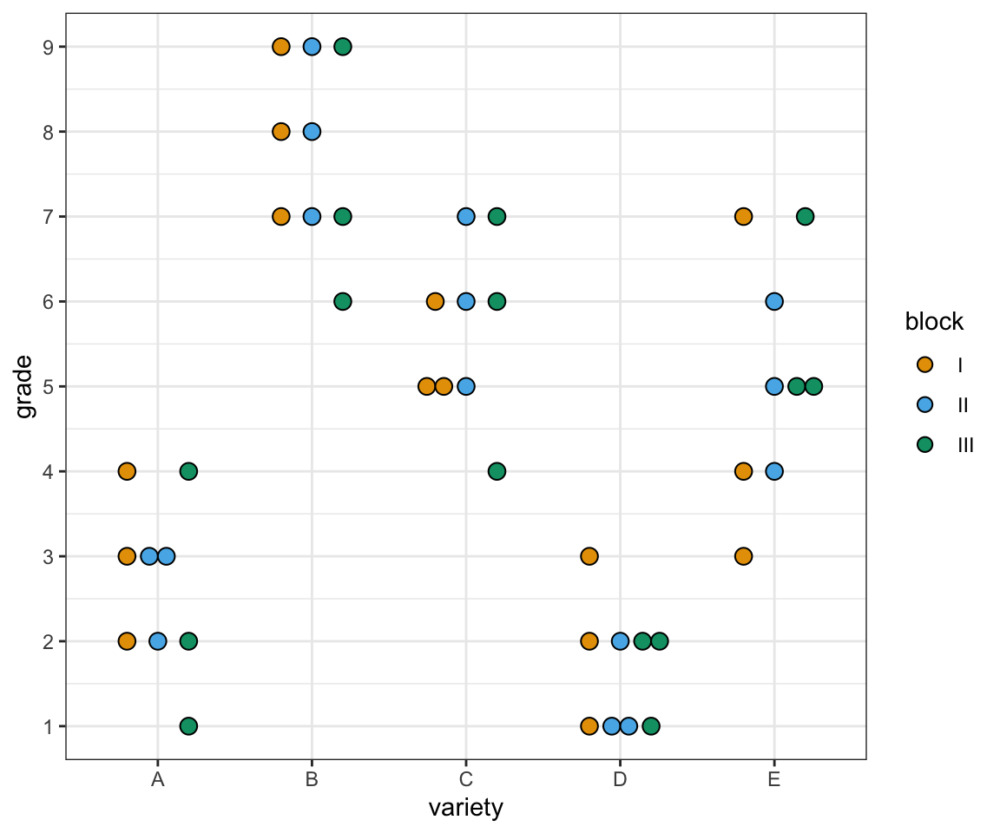
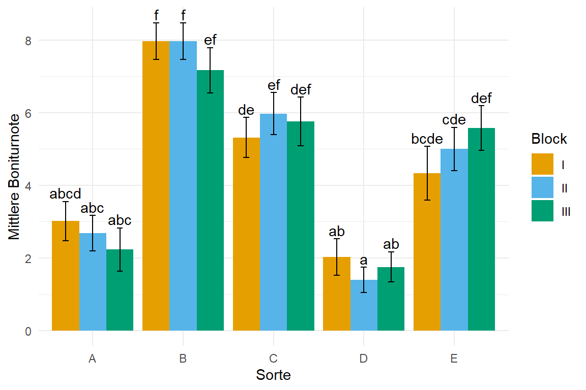
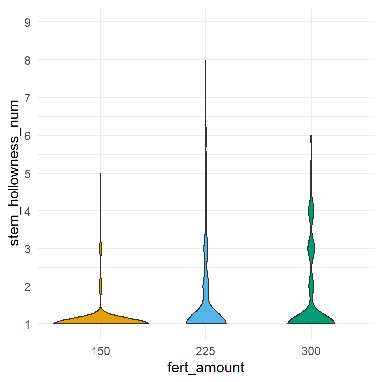
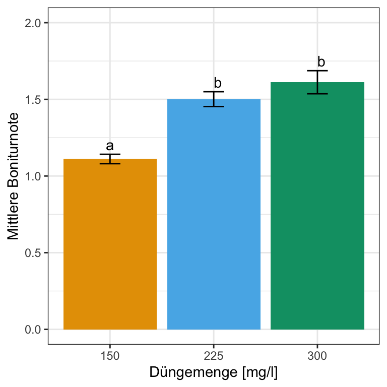
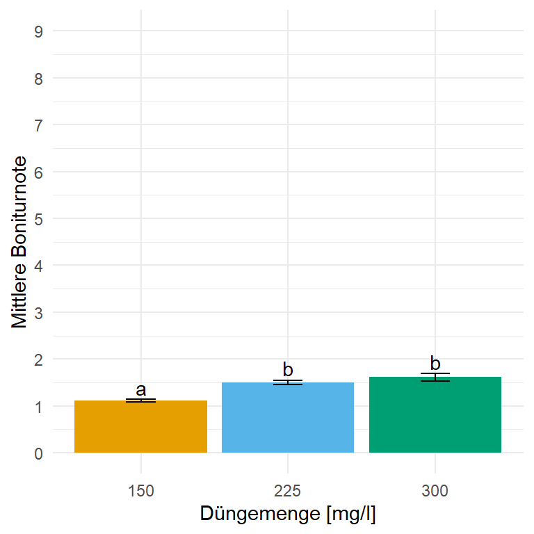

pacman::p_load(tidyverse, magrittr, broom,
parameters, performance, gtsummary,
ordinal, janitor, MASS, nnet, flextable,
emmeans, multcomp, ordinal, see, scales,
janitor, conflicted)
conflict_prefer("select", "dplyr")
conflict_prefer("filter", "dplyr")
conflict_prefer("mutate", "dplyr")
conflict_prefer("extract", "magrittr")48 Multinomiale / Ordinale logistische Regression
Letzte Änderung am 13. January 2024 um 19:51:57
“The amateur does not know what to do. The master knows what not to do.” — James Clear
Einführung in die Multinomiale / Ordinale logistische Regression per Video
Du findest auf YouTube Multinomiale / Ordinale logistische Regression als Video Reihe. Ich werde zwar alles nochmal hier als Text aufschreiben, aber manchmal ist das Sehen und Hören dann einfacher.
Was machen wir wenn wir ein Outcome haben mit mehr als zwei Kategorien. Wenn wir nur zwei Kategorien hätten, dann würden wir eine logistische Regression rechnen. Wenn wir mehr als zwei Kategorien haben, dann sind wir in dem Fall der multinomialen / ordinalen logistischen Regression. Wir rechnen eine multinomialen Regression, wenn wir keine Ordnung in den Kategorien in dem Outcome haben. Wenn wir eine Ordnung vorliegen haben, dann nutzen wir die ordinale Regression. Wir werden uns erstmal eine ordinale Regression anschauen mit nur drei geordenten Stufen. Dann schauen wir uns einmal wie wir eine ordinale Regression auf Boniturnoten in der Likert-Skala rechnen. Wir machen das getrennt, denn wir sind bei wenigen geordneten Kategorien meistens noch am Effekt zwischen den Kategorien interessiert. Im Gegensatz wollen wir bei einem Outcome mit Boniturnoten einen Gruppenvergleich rechnen. Dann interessiert uns der Unterschied und die Effekte zwischen den Boniturnoten nicht. Deshalb trennen wir das hier etwas auf.
Im zweiten Teil wollen wir uns dann noch eine multinominale Regression auf ungeordneten Kategorien eines Outcomes anschauen. Korrelterweise tuen wir nur so, als wäre unser vorher geordnetes Outcome dann eben ungeordnet. Das macht dann aber bei deiner Anwendung dann keinen großen Unterschied. Als eine Alternative zur multinationalen Regression stelle ich dann noch die logistsiche Regression vor. Wir können nämlich einfach unsere Daten nach dem Outcome jeweils in kleinere Datensätze mit nur jeweils zwei der Kategorien aufspalten. Das ist zwar nicht schön, aber auch eine Möglichkeit mit einem Problem umzugehen.
Ich gehe hier nicht auf die Theorie hinter der multinomialen / ordinalen logistischen Regression ein. Wenn dich dazu mehr interessiert findest du in den jeweiligen Abschnitten dann noch eine passende Referenz. Da kannst du dann schauen, welche Informationen du noch zusätzlich findest.
48.1 Annahmen an die Daten
Im folgenden Kapitel zu der multinomialen / ordinalen logistischen linearen Regression gehen wir davon aus, dass die Daten in der vorliegenden Form ideal sind. Das heißt wir haben weder fehlende Werte vorliegen, noch haben wir mögliche Ausreißer in den Daten. Auch wollen wir keine Variablen selektieren. Wir nehmen alles was wir haben mit ins Modell. Sollte eine oder mehre Bedingungen nicht zutreffen, dann schaue dir einfach die folgenden Kapitel an.
- Wenn du fehlende Werte in deinen Daten vorliegen hast, dann schaue bitte nochmal in das Kapitel 43 zu Imputation von fehlenden Werten.
- Wenn du denkst, dass du Ausreißer oder auffälige Werte in deinen Daten hast, dann schaue doch bitte nochmal in das Kapitel 41 zu Ausreißer in den Daten.
- Wenn du denkst, dass du zu viele Variablen in deinem Modell hast, dann hilft dir das Kapitel 42 bei der Variablenselektion.
Daher sieht unser Modell wie folgt aus. Wir haben ein \(y\) und \(p\)-mal \(x\). Wobei \(p\) für die Anzahl an Variablen auf der rechten Seite des Modells steht. Im Weiteren folgt unser \(y\) einer Multinomialverteilung. Damit finden wir im Outcome im Falle der multinomialen logistischen linearen Regression ungeordnete Kategorien und im Falle der ordinalen logistischen linearen Regression geordnete Kategorien.
\[ y \sim x_1 + x_2 + ... + x_p \]
Wir können in dem Modell auch Faktoren \(f\) haben, aber es geht hier nicht um einen Gruppenvergleich. Das ist ganz wichtig. Wenn du einen Gruppenvergleich rechnen willst, dann musst du in Kapitel 33 nochmal nachlesen.
48.2 Genutzte R Pakete
Wir wollen folgende R Pakete in diesem Kapitel nutzen.
Am Ende des Kapitels findest du nochmal den gesamten R Code in einem Rutsch zum selber durchführen oder aber kopieren.
48.3 Daten
Im Folgenden wollen wir uns die Daten von den infizierten Ferkeln noch einmal anschauen. Wir nehmen als Outcome die Spalte frailty und damit die Gebrechlichkeit der Ferkel. Die Spalte ordnen wir einmal nach robust, pre-frail und frail. Wobei robust ein gesundes Ferkel beschreibt und frail ein gebrechliches Ferkel. Damit wir später die Richtung des Effekts richtig interpretieren können, müssen wir von gut nach schlecht sortieren. Das brauchen wir nicht, wenn wir Boniturnoten haben, dazu mehr in einem eigenen Abschnitt. Wir bauen uns dann noch einen Faktor mit ebenfalls der Spalte frailty in der wir so tun, als gebe es diese Ordnung nicht. Wir werden dann die ordinale Regression mit dem Outcome frailty_ord rechnen und die multinominale Regression dann mit dem Outcome frailty_fac durchführen.
pig_tbl <- read_excel("data/infected_pigs.xlsx") %>%
mutate(frailty_ord = ordered(frailty, levels = c("robust", "pre-frail", "frail")),
frailty_fac = as_factor(frailty)) %>%
select(-infected)Schauen wir uns nochmal einen Ausschnitt der Daten in der Tabelle 48.1 an.
| age | sex | location | activity | crp | frailty | bloodpressure | weight | creatinin | frailty_ord | frailty_fac |
|---|---|---|---|---|---|---|---|---|---|---|
| 61 | male | northeast | 15.31 | 22.38 | robust | 62.24 | 19.05 | 4.44 | robust | robust |
| 53 | male | northwest | 13.01 | 18.64 | robust | 54.21 | 17.68 | 3.87 | robust | robust |
| 66 | female | northeast | 11.31 | 18.76 | robust | 57.94 | 16.76 | 3.01 | robust | robust |
| 59 | female | north | 13.33 | 19.37 | robust | 56.15 | 19.05 | 4.35 | robust | robust |
| 63 | male | northwest | 14.71 | 21.57 | robust | 55.38 | 18.44 | 5.27 | robust | robust |
| 55 | male | northwest | 15.81 | 21.45 | robust | 60.29 | 18.42 | 4.78 | robust | robust |
| … | … | … | … | … | … | … | … | … | … | … |
| 54 | female | north | 11.82 | 21.5 | pre-frail | 55.32 | 19.75 | 3.92 | pre-frail | pre-frail |
| 56 | male | west | 13.91 | 20.8 | frail | 58.37 | 17.28 | 7.44 | frail | frail |
| 57 | male | northwest | 12.49 | 21.95 | pre-frail | 56.66 | 16.86 | 2.44 | pre-frail | pre-frail |
| 61 | male | northwest | 15.26 | 23.1 | robust | 57.18 | 15.55 | 3.08 | robust | robust |
| 59 | female | north | 13.13 | 20.23 | robust | 56.64 | 18.6 | 3.41 | robust | robust |
| 63 | female | north | 10.01 | 19.89 | robust | 57.46 | 18.6 | 4.2 | robust | robust |
Das wären dann die Daten, die wir für unsere Modelle dann brauchen. Schauen wir mal was wir jetzt bei der ordinalen Regression herausbekommen.
48.4 Ordinale logistische Regression
Es gibt sicherlich einiges an Paketen in R um eine ordinale Regression durchzuführen. Ich nutze gerne die Funktion polr() aus dem R Paket {MASS}. Daneben gibt es auch noch das R Paket {ordina}l mit der Funktion clm(), die wir dann noch im Anschluss besprechen werden. Ich nutze jetzt erstmal die Funktion polr(), da wir hier noch eine externe Referenz haben, die uns noch detailliertere Informationen liefern kann.
Ich verweise gerne hier auf das tolle Tutorium Ordinal Logistic Regression | R Data Analysis Examples. Hier erfährst du noch mehr über die Analyse der ordinalen logistischen Regression.
Wir schon erwähnt sparen wir usn die mathematischen Details und utzen gleich die Funktion polr auf unserem Outcome frailty. Wir müssen keine Verteilungsfamilie extra angeben, dass haben wir schon mit der Auswahl der Funktion getan. Die Funktion polr kann nur eine ordinale Regression rechnen und wird einen Fehler ausgeben, wenn das Outcome \(y\) nicht passt.
ologit_fit <- polr(frailty_ord ~ age + sex + location + activity + crp +
bloodpressure + weight + creatinin,
data = pig_tbl)Schauen wir uns einmal die Ausgabe des Modellfits der ordinalen Regression mit der Funktion summary() an. Wir sehen eine Menge Zahlen und das wichtigste für uns ist ja, dass wir zum einen Wissen, dass wir auch die ordinale Regression auf der \(link\)-Funktion rechnen. Wir erhalten also wieder eine Transformation des Zusammenhangs zurück, wie wir es schon bei der Poisson Regression sowie bei der logistischen Regression hatten.
Hier gibt es nur die Kurzfassung der link-Funktion. Dormann (2013) liefert hierzu in Kapitel 7.1.3 nochmal ein Einführung in das Thema.
ologit_fit %>% summary()Call:
polr(formula = frailty_ord ~ age + sex + location + activity +
crp + bloodpressure + weight + creatinin, data = pig_tbl)
Coefficients:
Value Std. Error t value
age 0.03191 0.02168 1.4718
sexmale 0.06970 0.26447 0.2635
locationnortheast -0.27291 0.28063 -0.9725
locationnorthwest 0.07598 0.24883 0.3054
locationwest 0.24400 0.27285 0.8942
activity -0.06970 0.07267 -0.9591
crp 0.06499 0.06820 0.9529
bloodpressure -0.05051 0.03037 -1.6632
weight 0.06190 0.06649 0.9310
creatinin -0.01100 0.06854 -0.1605
Intercepts:
Value Std. Error t value
robust|pre-frail 0.6494 3.0697 0.2116
pre-frail|frail 2.4716 3.0724 0.8044
Residual Deviance: 794.6938
AIC: 818.6938 Unsere Ausgabe teilt sich in zwei Teile auf. In dem oberen Teil sehen wir die Koeffizienten des Modells zusammen mit dem Fehler und der Teststatistik. Was wir nicht sehen, ist ein \(p\)-Wert. Die Funktion rechnet uns keinen Signifikanztest aus. Das können wir aber gleich selber machen. In dem Abschnitt Intercepts finden wir die Werte für die Gruppeneinteilung auf der link-Funktion wieder. Wir transformieren ja unsere drei Outcomekategorien in einen kontinuierliche Zahlenzusammenhang. Trotzdem müssen ja die drei Gruppen auch wieder auftauchen. In dem Abschnitt Intercepts finden wir die Grenzen für die drei Gruppen auf der link-Funktion.
Wir gibt auch ein Tutorial für How do I interpret the coefficients in an ordinal logistic regression in R?
Berechnen wir jetzt einmal die \(p\)-Werte per Hand. Dafür brauchen wir die absoluten Werte aus der t value Spalte aus der summary des Modellobjekts. Leider ist die Spalte nicht schön formatiert und so müssen wir uns etwas strecken um die Koeffizienten sauber aufzuarbeiten. Wir erhalten dann das Objekt coef_tbl wieder.
coef_tbl <- summary(ologit_fit) %>%
coef %>%
as_tibble(rownames = "term") %>%
clean_names() %>%
mutate(t_value = abs(t_value))
coef_tbl# A tibble: 12 × 4
term value std_error t_value
<chr> <dbl> <dbl> <dbl>
1 age 0.0319 0.0217 1.47
2 sexmale 0.0697 0.264 0.264
3 locationnortheast -0.273 0.281 0.973
4 locationnorthwest 0.0760 0.249 0.305
5 locationwest 0.244 0.273 0.894
6 activity -0.0697 0.0727 0.959
7 crp 0.0650 0.0682 0.953
8 bloodpressure -0.0505 0.0304 1.66
9 weight 0.0619 0.0665 0.931
10 creatinin -0.0110 0.0685 0.161
11 robust|pre-frail 0.649 3.07 0.212
12 pre-frail|frail 2.47 3.07 0.804Um die Fläche rechts von dem \(t\)-Wert zu berechnen, können wir zwei Funktionen nutzen. Die Funktion pnorm() nimmt eine Standradnormalverteilung an und die Funktion pt() vergleicht zu einer \(t\)-Verteilung. Wenn wir rechts von der Verteilung schauen wollen, dann müssen wir die Option lower.tail = FALSE wählen. Da wir auch zweiseitig statistisch Testen, müssen wir den ausgerechneten \(p\)-Wert mal zwei nehmen. Hier einmal als Beispiel für den \(t\)-Wert von \(1.96\). Mit pnorm(1.96, lower.tail = FALSE) * 2 erhalten wir \(0.05\) als Ausgabe. Das ist unser \(p\)-Wert. Was uns ja nicht weiter überrascht. Denn rechts neben dem Wert von \(1.96\) in einer Standardnormalverteilung ist ja \(0.05\). Wenn wir einen \(t\)-Test rechnen würden, dann müssten wir noch die Freiheitsgrade df mit angeben. Mit steigendem \(n\) nähert sich die \(t\)-Verteilung der Standardnormalverteilung an. Wir haben mehr als \(n = 400\) Beobachtungen, daher können wir auch df = 400 setzen. Da kommt es auf eine Zahl nicht an. Wir erhalten mit pt(1.96, lower.tail = FALSE, df = 400) * 2 dann eine Ausgabe von \(0.0507\). Also fast den gleichen \(p\)-Wert.
Im Folgenden setzte ich die Freiheitsgrade df = 3 dammit wir was sehen. Bei so hohen Fallzahlen wir in unserem beispiel würden wir sonst keine Unterschiede sehen.
coef_tbl %>%
mutate(p_n = pnorm(t_value, lower.tail = FALSE) * 2,
p_t = pt(t_value, lower.tail = FALSE, df = 3) * 2) %>%
mutate(across(where(is.numeric), round, 3))# A tibble: 12 × 6
term value std_error t_value p_n p_t
<chr> <dbl> <dbl> <dbl> <dbl> <dbl>
1 age 0.032 0.022 1.47 0.141 0.237
2 sexmale 0.07 0.264 0.264 0.792 0.809
3 locationnortheast -0.273 0.281 0.973 0.331 0.403
4 locationnorthwest 0.076 0.249 0.305 0.76 0.78
5 locationwest 0.244 0.273 0.894 0.371 0.437
6 activity -0.07 0.073 0.959 0.338 0.408
7 crp 0.065 0.068 0.953 0.341 0.411
8 bloodpressure -0.051 0.03 1.66 0.096 0.195
9 weight 0.062 0.066 0.931 0.352 0.421
10 creatinin -0.011 0.069 0.161 0.872 0.883
11 robust|pre-frail 0.649 3.07 0.212 0.832 0.846
12 pre-frail|frail 2.47 3.07 0.804 0.421 0.48 Damit haben wir einmal händisch uns die \(p\)-Werte ausgerechnet. Jetzt könnte man sagen, dass ist ja etwas mühselig. Gibt es da nicht auch einen einfacheren Weg? Ja wir können zum einen die Funktion tidy() nutzen um die 95% Konfidenzintervalle und die exponierten Effektschätzer aus der ordinalen Regresssion zu erhalten. Wir erhalten aber wieder keine \(p\)-Werte sondern müssten uns diese \(p\)- Werte dann wieder selber berechnen.
ologit_fit %>%
tidy(conf.int = TRUE, exponentiate = TRUE) %>%
select(-coef.type)# A tibble: 12 × 6
term estimate std.error statistic conf.low conf.high
<chr> <dbl> <dbl> <dbl> <dbl> <dbl>
1 age 1.03 0.0217 1.47 0.990 1.08
2 sexmale 1.07 0.264 0.264 0.639 1.80
3 locationnortheast 0.761 0.281 -0.973 0.437 1.32
4 locationnorthwest 1.08 0.249 0.305 0.662 1.76
5 locationwest 1.28 0.273 0.894 0.747 2.18
6 activity 0.933 0.0727 -0.959 0.808 1.08
7 crp 1.07 0.0682 0.953 0.934 1.22
8 bloodpressure 0.951 0.0304 -1.66 0.896 1.01
9 weight 1.06 0.0665 0.931 0.934 1.21
10 creatinin 0.989 0.0685 -0.161 0.865 1.13
11 robust|pre-frail 1.91 3.07 0.212 NA NA
12 pre-frail|frail 11.8 3.07 0.804 NA NA Um all dieses Berechnen zu umgehen, können wir dann auch die Funktion model_parameters() nutzen. Hier berechnen wir dann die \(p\)-Wert mit \(df = 400\) aus einer \(t\)-Verteilung. Damit umgehen wir das Problem, dass unser Modellfit keine \(p\)-Werte liefert.
ologit_fit %>%
model_parameters() # alpha
Parameter | Log-Odds | SE | 95% CI | t(400) | p
-------------------------------------------------------------------
robust|pre-frail | 0.65 | 3.07 | [-5.39, 6.68] | 0.21 | 0.833
pre-frail|frail | 2.47 | 3.07 | [-3.57, 8.51] | 0.80 | 0.422
# beta
Parameter | Log-Odds | SE | 95% CI | t(400) | p
-----------------------------------------------------------------------
age | 0.03 | 0.02 | [-0.01, 0.07] | 1.47 | 0.142
sex [male] | 0.07 | 0.26 | [-0.45, 0.59] | 0.26 | 0.792
location [northeast] | -0.27 | 0.28 | [-0.83, 0.27] | -0.97 | 0.331
location [northwest] | 0.08 | 0.25 | [-0.41, 0.56] | 0.31 | 0.760
location [west] | 0.24 | 0.27 | [-0.29, 0.78] | 0.89 | 0.372
activity | -0.07 | 0.07 | [-0.21, 0.07] | -0.96 | 0.338
crp | 0.06 | 0.07 | [-0.07, 0.20] | 0.95 | 0.341
bloodpressure | -0.05 | 0.03 | [-0.11, 0.01] | -1.66 | 0.097
weight | 0.06 | 0.07 | [-0.07, 0.19] | 0.93 | 0.352
creatinin | -0.01 | 0.07 | [-0.15, 0.12] | -0.16 | 0.873In Tabelle 48.2 sehen wir nochmal die Ergebnisse der ordinalen Regression einmal anders aufgearbeitet. Wir aber schon bei der Funktion tidy() fehlen in der Tabelle die \(p\)-Werte. Wir können aber natürlich auch eine Entscheidung über die 95% Konfidenzintervalle treffen. Wenn die 1 mit im 95% Konfidenzintervall ist, dann können wir die Nullhypothese nicht ablehnen.
ologit_fit %>%
tbl_regression(exponentiate = TRUE) %>%
as_flex_table()Characteristic | OR1 | 95% CI1 |
|---|---|---|
age | 1.03 | 0.99, 1.08 |
sex | ||
female | — | — |
male | 1.07 | 0.64, 1.80 |
location | ||
north | — | — |
northeast | 0.76 | 0.44, 1.32 |
northwest | 1.08 | 0.66, 1.76 |
west | 1.28 | 0.75, 2.18 |
activity | 0.93 | 0.81, 1.08 |
crp | 1.07 | 0.93, 1.22 |
bloodpressure | 0.95 | 0.90, 1.01 |
weight | 1.06 | 0.93, 1.21 |
creatinin | 0.99 | 0.86, 1.13 |
1OR = Odds Ratio, CI = Confidence Interval | ||
Wi es im gazen Kapitel schon durchscheint, die Interpreation der \(OR\) aus einer ordinalen Regression ist nicht einfach, geschweige den intuitiv. Was wir haben ist der Trend. Wir haben unser Outcome von robust zu frail sortiert und damit von gut nach schlecht. Wir können so die Richtung der Variablen in unserem Modell interpretieren. Das heißt, dass männliche Ferkel eher von einer Gebrechlichkeit betroffen sind als weibliche Ferkel. Oder wir sagen, dass ein ansteigender CRP Wert führt zu weniger Gebrechlichkeit. Auf diesem Niveau lassen sich die \(OR\) einer ordinalen Regression gut interpretieren.
48.5 Gruppenvergleich
In diesem Abschnitt wollen wir Gruppenvergleich mit dem Cumulative Link Models (CLM) für ordinale Daten rechnen. Oder andersherum, wir haben Boniturdaten vorliegen und wollen hierfür einen multipen Vergleich rechnen. Mehr zu dem Modell findest du im Tutorium zu Introduction to Cumulative Link Models (CLM) for Ordinal Data. Wir konzentrieren uns hier direkt auf die Auswertung an einem Spieldatensatz. Daran können wir dann einfacher erkennen, was bei einem Vergleich rauskommt, wenn wir wissen was wir reingesteckt haben. Wenn du mehr zu dem Thema lesen willst, dann hilft eventuell auch die Hilfeseite zu Ordinal models with {emmeans}. Ich muss aber sagen, dass die Seite etwas theoretisch ist.
Wir bauen uns jetzt einen Spieldatensatz mit zwanzig Boniturnoten für drei Tierarten. Ich nehme hier nur fünf Notenschritte, da sonst die Sachlage sehr unübersichtlich wird. Im Prinzip generieren wir uns mit der Funktion sample nach vorgegeben Wahrscheinlichkeiten für jede Note zwanzig Boniturnoten für jede Tierart. Dabei haben Katzen eine niedrigere Note als Hunde und die Hunde haben schlechtere Noten als die Füchse. Am Ende brauchen wir dann noch einen geordneten Faktor likert_ord damit wir die ordinale Regression rechnen können. Die ursprünglichen Noten behalte ich als numerisch um die Daten besser in {ggplot} abbilden zu können.
set.seed(20231201)
n_grp <- 20
grade_tbl <- tibble(trt = gl(3, n_grp, labels = c("cat", "dog", "fox")),
likert = c(sample(1:5, size = n_grp, replace = TRUE, prob = c(0.2, 0.5, 0.2, 0.1, 0.0)),
sample(1:5, size = n_grp, replace = TRUE, prob = c(0.1, 0.2, 0.5, 0.2, 0.0)),
sample(1:5, size = n_grp, replace = TRUE, prob = c(0.0, 0.0, 0.2, 0.5, 0.3)))) %>%
mutate(likert_ord = ordered(likert))Dann berechnen wir einmal die mittleren Boniturnoten für die drei Tierarten. Wir sehen, dass wir ziemlich gerade Durchschnittsnoten haben.
grade_tbl %>%
group_by(trt) %>%
summarise(mean(likert))# A tibble: 3 × 2
trt `mean(likert)`
<fct> <dbl>
1 cat 2
2 dog 3
3 fox 4.1Jetzt können wir die Daten auch schon in die ordinale Regression mit clm() stecken. Da die Noten alle den gleichen Abstand zueinander haben, nutzen wir die Option threshold = "symmetric". Wir brauchen hier die Ausgabe der Moelldierung gar nicht weiter im Detail. Wir nutzen den Fit dann gleich in der ANOVA und {emmeans} für den Gruppenvergleich der mittleren Boniturnoten.
clm_fit <- clm(likert_ord ~ trt, data = grade_tbl,
threshold = "symmetric")Die ANOVA funktioniert wie gewohnt. Wir müssen hier auch nichts anpassen, wir kriegen einfach so unsere p-Werte geliefert. Wir haben einen signifikanten Effekt der Tierarten, was ja auch zu erwarten war. Die Boniturnoten unterscheiden sich zwischen Katzen, Hunden und Füchsen.
anova(clm_fit)Type I Analysis of Deviance Table with Wald chi-square tests
Df Chisq Pr(>Chisq)
trt 2 33.628 4.986e-08 ***
---
Signif. codes: 0 '***' 0.001 '**' 0.01 '*' 0.05 '.' 0.1 ' ' 1Dann können wir auch schon den multipen Gruppenvergleich rechnen. Da wir die mittleren Boniturnoten wiedergegeben haben wollen, nutzen wir die Option mode = "mean.class". Sonst würden wir andere Werte erhalten, die dann wirklich schwer zu interpretieren sind. Wie du siehst, sind es die gleichen Werte die wir auch oben für unsere Mittelwerte über die Boniturnoten berechnet haben.
emm_obj <- clm_fit %>%
emmeans(~ trt, mode = "mean.class")Dann können wir uns auch schon das compact letter display wiedergeben lassen. Auch hier gibt es keine Überraschung, die drei Tierarten unterscheiden sich. Mit der Ausgabe könnten wir dann auch gleich ein Säulendigramm erstellen, aber das zeige ich gleich mal in dem zweiten Beispiel für zwei Faktoren und der Bonitur von Weizen.
emm_obj %>%
cld(Letters = letters) trt mean.class SE df asymp.LCL asymp.UCL .group
cat 1.98 0.169 Inf 1.65 2.31 a
dog 3.00 0.162 Inf 2.68 3.32 b
fox 4.09 0.162 Inf 3.77 4.40 c
Confidence level used: 0.95
P value adjustment: tukey method for comparing a family of 3 estimates
significance level used: alpha = 0.05
NOTE: If two or more means share the same grouping symbol,
then we cannot show them to be different.
But we also did not show them to be the same. In unserem zweiten Beispiel schauen wir uns einen zweifaktoriellen Datensatz einmal an. Wir haben Weizen angepflanzt und bonitieren die Weizenpflanzen nach der Likert Skala. Dabei bedeutet dann eine 1 ein schlechte Note und eine 9 die bestmögliche Note. Wir hätten natürlich hier auch einen Kurskal-Wallis-Test rechnen können und dann im Anschluss einen paarweisen Wilcoxon Test. Nun modellieren wir hier aber die Boniturnoten mal mit einer ordinalen Regression und rechnen den anschließenden Gruppenvergleich dann mit dem R Paket {emmeans}.
Unser Datensatz grade_tbl enthält den Faktor block mit drei Levels sowie den Faktor variety mit fünf Leveln. Jedes Level repräsentiert dabei eine Weizensorte. Wichtig ist hier, dass wir die Noten als geordneten Faktor mit der Funktion ordered erstellen. Nur dann haben die Noten eine Ordnung und die folgenden Funktionen erkennen dann auch die Spalte grade_ord als eine ordinale Spalte mit Noten.
grade_tbl <- tibble(block = rep(c("I", "II", "III"), each = 3),
A = c(2, 3, 4, 3, 3, 2, 4, 2, 1),
B = c(7, 9, 8, 9, 7, 8, 9, 6, 7),
C = c(6, 5, 5, 7, 5, 6, 4, 7, 6),
D = c(2, 3, 1, 2, 1, 1, 2, 2, 1),
E = c(4, 3, 7, 5, 6, 4, 5, 7, 5)) %>%
gather(key = variety, value = grade, A:E) %>%
mutate(grade_ord = ordered(grade))Wir schauen uns nochmal den Datensatz an und sehen, dass wir einmal die Spalte grade als numerische Spalte vorliegen haben und einmal als geordneten Faktor. Wir brauchen die numerische Spalte um die Daten besser in ggplot() darstellen zu können.
grade_tbl %>% head(4)# A tibble: 4 × 4
block variety grade grade_ord
<chr> <chr> <dbl> <ord>
1 I A 2 2
2 I A 3 3
3 I A 4 4
4 II A 3 3 In Abbildung 48.1 sehen wir einmal die Daten als Dotplot dargestellt. Auf der x-Achse sind die Weizensorten und auf der y-Achse die Boniturnoten. Ich habe noch die zusätzlichen Linien für jede einzelne Note mit eingezeichnet.
ggplot(grade_tbl, aes(variety, grade, fill = block)) +
theme_minimal() +
geom_dotplot(binaxis = "y", stackdir='center',
position=position_dodge(0.6), dotsize = 0.75) +
scale_y_continuous(breaks = 1:9, limits = c(1,9)) +
scale_fill_okabeito() 
Jetzt können wir schon die Funktion clm() aus dem R Paket {ordinal} verwenden um die ordinale Regression zu rechnen. Wir haben in dem R Paket {ordinal} noch weitere Modelle zu Verfügung mit denen wir auch komplexere Designs bis hin zu linearen gemischten Modellen für eine ordinale Regresssion rechnen können. Da wir mit Boniturnoten als Outcome arbeiten setzen wir auch die Option threshold = "symmetric". Damit teilen wir der Funktion clm() mit, dass wir es mit einer symmetrischen Notenskala zu tun haben. Wenn du das nicht hast, dass kannst du die Option auch of "flexible" stellen. Dann wird eine nicht symmetrische Verteilung des Outcomes angenommen.
clm_fit <- clm(grade_ord ~ variety + block + variety:block, data = grade_tbl,
threshold = "symmetric")Es ist auch möglich auf dem Modellfit eine ANOVA zu rechnen. Wir machen das hier einmal, aber wir erwarten natürlich einen signifikanten Effekt von der Sorte. Die Signifikanz konnten wir ja schon oben im Dotplot sehen.
anova(clm_fit)Type I Analysis of Deviance Table with Wald chi-square tests
Df Chisq Pr(>Chisq)
variety 4 38.7587 7.813e-08 ***
block 2 0.0987 0.9518
variety:block 8 4.9452 0.7634
---
Signif. codes: 0 '***' 0.001 '**' 0.01 '*' 0.05 '.' 0.1 ' ' 1Jetzt nutzen wir wieder den Modellfit für unseren Gruppenvergleich in {emmeans}. Wir nutzen dafür wieder die Funktion emmeans() und lassen uns das compact letter display über die Funktion cld() wiedergeben. Da wir hier eigentlich keinen signifikanten Effekt der Blöcke vorliegen haben, könnten wir auch einfach die Option ~ variety nutzen und den Block weglassen. Dann wäre auch die Ausgabe mit den compact letter display etwas übersichtlicher. Ich habe dann noch die Ausgabe einmal nach den Sorten sortiert und nicht nach dem compact letter display um hier etwas mehr Übersicht zu erhalten.
emm_obj <- clm_fit %>%
emmeans(~ variety * block, mode = "mean.class") %>%
cld(Letters = letters) %>%
arrange(variety)
emm_obj variety block mean.class SE df asymp.LCL asymp.UCL .group
A III 2.23 0.600 Inf 1.054 3.41 abc
A II 2.68 0.484 Inf 1.737 3.63 abc
A I 3.02 0.540 Inf 1.960 4.08 abcd
B III 7.17 0.623 Inf 5.949 8.39 ef
B I 7.97 0.502 Inf 6.985 8.95 f
B II 7.97 0.502 Inf 6.985 8.95 f
C I 5.32 0.550 Inf 4.238 6.40 de
C III 5.76 0.672 Inf 4.441 7.08 def
C II 5.98 0.582 Inf 4.835 7.12 ef
D II 1.39 0.349 Inf 0.709 2.08 a
D III 1.76 0.417 Inf 0.938 2.57 ab
D I 2.03 0.502 Inf 1.048 3.02 ab
E I 4.34 0.739 Inf 2.888 5.78 bcde
E II 5.00 0.597 Inf 3.829 6.17 cde
E III 5.58 0.616 Inf 4.369 6.78 def
Confidence level used: 0.95
P value adjustment: tukey method for comparing a family of 15 estimates
significance level used: alpha = 0.05
NOTE: If two or more means share the same grouping symbol,
then we cannot show them to be different.
But we also did not show them to be the same. In der Abbildung 48.2 siehst du dann einmal die Ausgabe des multipen Gruppenvergleichs visualisiert. Hier wäre es dann schon fast sinnvoll über die Blöcke zu mitteln und daher den Block aus dem Modell zu nehmen. Der Block hat keinen Effekt und sorgt aber für noch mehr Vergleiche, die gerechnet werden müssen. Du kannst dann ja oben nochmal die Funktion emmeans() anpassen und gemittelt über alle Blöcke mit der Option ~ variety rechnen. Die Funktion str_trim() entfernt dann noch die Leerzeichen von dem compact letter display und zentriert damit alles schön.
emm_obj %>%
as_tibble() %>%
ggplot(aes(x = variety, y = mean.class, fill = block)) +
theme_minimal() +
labs(y = "Mittlere Boniturnote", x = "Sorte",
fill = "Block") +
geom_bar(stat = "identity",
position = position_dodge(width = 0.9, preserve = "single")) +
geom_text(aes(label = str_trim(.group), y = mean.class + SE + 0.01),
position = position_dodge(width = 0.9), vjust = -0.25) +
geom_errorbar(aes(ymin = mean.class-SE, ymax = mean.class+SE),
width = 0.2,
position = position_dodge(width = 0.9, preserve = "single")) +
scale_fill_okabeito()
{emmeans} generiert. Teilweise kommt das compact letter display an seine visuellen Grenzen. Hier wäre es dann schon fast sinnvoll über die Blöcke zu mitteln und daher den Block aus dem Modell zu nehmen.
Anwendungsbeispiel: Gruppenvergleich für eine Bonitur
Im folgenden Beispiel schauen wir uns nochmal ein praktische Auswertung von einem agrarwissenschaftlichen Beispiel mit Brokkoli an. Wir haben uns in diesem Experiment verschiedene Dosen fert_amount von einem Dünger aufgebracht sowie verschiedene Zeitpunkte der Düngung fert_time berücksichtigt. Ziel ist es die Boniturnoten für den Stamm von Brokkoli miteinander zu vergleichen. Auch hier haben wir einige Besonderheiten in den Daten, da nicht jede Faktorkombination vorliegt. Wir ignorieren aber diese Probleme und rechnen einfach stumpf unseren Gruppenvergleich. Wir müssen aber ein paar Anpassungen durchführen. Unsere Noten müssen ein geordneter Faktor sein, daher nutzen wir die Funktion ordered. Darüber hinaus schmeißen wir die Düngerzeit early aus den Daten, da wir zu dem Zeitpunkt keine hohlen Stämme bonitiert haben.
broc_tbl <- read_excel("data/broccoli_weight.xlsx") %>%
mutate(fert_time = factor(fert_time, levels = c("none", "early", "late")),
fert_amount = as_factor(fert_amount),
block = as_factor(block),
stem_hollowness_num = stem_hollowness,
stem_hollowness = ordered(stem_hollowness)) %>%
filter(fert_time == "early") %>%
select(fert_time, fert_amount, block, stem_hollowness, stem_hollowness_num) %>%
droplevels() %>%
na.omit()Im Folgenden einmal die Tabelle mit tabyl aus dem R Paket {janitor}. Mehr dazu auf der Hilfeseite zu tabyls: a tidy, fully-featured approach to counting things. Wir sehen, dass wir kaum schlechte Noten erhalten. Fast alle Brokkoliköpfe haben eine 1 erhalten, was für intakte Köpfe ohne einen hohlen Stamm spricht.
broc_tbl %>%
tabyl(stem_hollowness, fert_amount) stem_hollowness 150 225 300
1 213 329 154
2 6 47 15
3 4 32 22
4 2 14 17
5 1 10 4
6 0 3 2
8 0 1 0Die Tabelle sehen wir dann auch nochmal in der Abbildung 48.3 als Violinplot visualisiert. Wir sehen hier nochmal sehr drastisch, dass wir kaum Noten großer als Eins in den Daten vorliegen haben.
ggplot(broc_tbl, aes(fert_amount, stem_hollowness_num, fill = fert_amount)) +
theme_minimal() +
geom_violin() +
scale_y_continuous(breaks = 1:9, limits = c(1,9)) +
scale_fill_okabeito() +
theme(legend.position = "none")
Wir rechnen jetzt natürlich trotzdem eine ordinale Regression mit der Funktion clm(). Wir setzen die Option theshold = "symmetric" da wir davon ausgehen, dass unsere Noten alle den gleichen Abstand zueinander haben.
clm_fit <- clm(stem_hollowness ~ fert_amount,
data = broc_tbl, threshold = "symmetric")Jetzt rechnen wir in den beiden folgenden Tabs einmal die ANOVA und dann auch den multiplen Gruppenvergleich mit {emmeans}. Da wir hier ordinale Daten haben, können wir dann nicht einfach die Standardverfahren nehmen. Wir entscheiden uns dann für den Standardfehler bei der Darstellung.
Wir rechnen hier einmal die ANOVA und nutzen den \(\mathcal{X}^2\)-Test für die Ermittelung der p-Werte. Wir müssen hier einen Test auswählen, da per Standardeinstellung kein Test gerechnet wird. Wir machen dann die Ausgabe nochmal schöner und fertig sind wir.
clm_fit %>%
anova() %>%
model_parameters()Parameter | Chi2(2) | p
------------------------------
fert_amount | 35.82 | < .001
Anova Table (Type 1 tests)Wir sehen, dass der die Menge des Düngers signifikant ist. Wir haben nicht mehr Faktoren in dem Modell gehabt, so dass wir hier auch keine weiteren Aussagen tätigen können.
Im Folgenden rechnen wir einmal für den Faktor fert_amount einen Gruppenvergleich. Wir setzen hier die Option mean.class damit wir dann die mittleren Noten wiedergegeben bekommen. Mit den mittleren Noten können wir dann ein Säulendiagramm erstellen. Dann adjustieren wir noch nach Bonferroni und sind fertig.
emm_obj <- clm_fit %>%
emmeans(~ fert_amount, mode = "mean.class") %>%
cld(Letters = letters, adjust = "bonferroni")
emm_obj fert_amount mean.class SE df asymp.LCL asymp.UCL .group
150 1.11 0.0308 Inf 1.04 1.18 a
225 1.50 0.0485 Inf 1.39 1.62 b
300 1.61 0.0753 Inf 1.43 1.79 b
Confidence level used: 0.95
Conf-level adjustment: bonferroni method for 3 estimates
P value adjustment: bonferroni method for 3 tests
significance level used: alpha = 0.05
NOTE: If two or more means share the same grouping symbol,
then we cannot show them to be different.
But we also did not show them to be the same. Das emm_obj Objekt werden wir dann gleich einmal in {ggplot} visualisieren. Die mean.class stellt den mittleren Noten des Brokkoli für die Menge der Düngung dar. Wir nutzen dann auch hier die Standardfehler für die Abbildungen, da wir sonst schnelle Werte kleiner 0 und größer 9 erhalten. Dann können wir zum Abschluss auch das compact letter display anhand der Abbildung interpretieren.
Gerade in diesem Beispiel bietet es sich an, dass wir explizit mindestens einen Notenpunktunterschied vorliegen haben wollen, damit wir von einem relevanten Unterschied sprechen können. Die Funktion cld() erlaubt es ein \(\Delta\) zu definieren, dass mindestens überschritten sein muss, damit wir einen Unterschied feststellen. Alles was in dem Bereich \(\pm\Delta\) liegt, gilt dann als gleich auch wenn es sonst signifikant wäre. Deshalb setzen wir die Option delta = 1 um sicherzustellen, dass nur relevante Unterschiede auch als solche angezeigt werden. Daher haben wir nach der Anpassung auch keine signifikanten Unterschiede mehr. Alle Gruppen sind gleich.
clm_fit %>%
emmeans(~ fert_amount, mode = "mean.class") %>%
cld(Letters = letters, adjust = "bonferroni", delta = 1) fert_amount mean.class SE df asymp.LCL asymp.UCL .equiv.set
150 1.11 0.0308 Inf 1.04 1.18 a
225 1.50 0.0485 Inf 1.39 1.62 a
300 1.61 0.0753 Inf 1.43 1.79 a
Confidence level used: 0.95
Conf-level adjustment: bonferroni method for 3 estimates
P value adjustment: bonferroni method for 3 tests
Statistics are tests of equivalence with a threshold of 1
P values are left-tailed
significance level used: alpha = 0.05
Estimates sharing the same symbol test as equivalent In der Abbildung 48.4 siehst du das Ergebnis der Auswertung in einem Säulendiagramm. Zwar sind die mittleren Boniturnoten signifikant unterschiedlich, aber ist der Effekt auf der vollen Boniturnotenskala kaum zu sehen. Wir haben es hier mit knapp einer Notenstufe Unterschied zu tun und das ist wirklich wenig. Daher wäre hier mal der Fall, dass wir einen signifikanten aber nicht relevanten Unterschied vorliegen haben.
emm_obj %>%
as_tibble() %>%
ggplot(aes(x = fert_amount, y = mean.class, fill = fert_amount)) +
theme_minimal() +
labs(y = "Mittlere Boniturnote", x = "Düngemenge [mg/l]",
fill = "Düngemenge [mg/l]") +
geom_bar(stat = "identity") +
geom_text(aes(label = str_trim(.group), y = mean.class + SE + 0.01), vjust = -0.25) +
geom_errorbar(aes(ymin = mean.class-SE, ymax = mean.class+SE),
width = 0.2) +
scale_fill_okabeito() +
theme(legend.position = "none") +
scale_y_continuous(breaks = c(0, 0.5, 1.0, 1.5, 2.0), limits = c(0, 2))
emm_obj %>%
as_tibble() %>%
ggplot(aes(x = fert_amount, y = mean.class, fill = fert_amount)) +
theme_minimal() +
labs(y = "Mittlere Boniturnote", x = "Düngemenge [mg/l]",
fill = "Düngemenge [mg/l]") +
geom_bar(stat = "identity") +
geom_text(aes(label = str_trim(.group), y = mean.class + SE + 0.01), vjust = -0.25) +
geom_errorbar(aes(ymin = mean.class-SE, ymax = mean.class+SE),
width = 0.2) +
scale_fill_okabeito() +
theme(legend.position = "none") +
scale_y_continuous(breaks = 0:9, limits = c(0,9))

clm()-Modell berechnet das mittlere Boniturnote für den Faktor fert_amount. Das compact letter display wird dann in {emmeans} generiert. Wir nutzen hier den Standardfehler, da die Standardabweichung mit der großen Fallzahl rießig wäre.48.6 Multinomiale logistische Regression
Was machen wir in eine multinomialen logistische Regression? Im Gegensatz zu der ordinalen Regression haben wir in der multinominalen Regression keine Ordnung in unserem Outcome. Das macht die Sache dann schon eine Nummer komplizierter. Und wir lösen dieses Problem indem wir ein Level des Outcomes oder eben eine Kategorie des Outcomes als Referenz definieren. Dann haben wir wieder unsere Ordnung drin. Und die Definition der Referenz ist auch manchmal das schwerste Unterfangen. Wenn ich keine Ordnung in meinem Outcome habe, wie soll ich dann die Referenz bestimmen? Aber das ist dann immer eine Frage an den konkreten Datensatz. Hier basteln wir uns ja die Fragestellung so hin, dass es passt.
Ich verweise gerne hier auf das tolle Tutorium Multinomial Logistic Regression | R Data Analysis Examples. Hier erfährst du noch mehr über die Analyse der multinominale logistischen Regression.
Um eine Referenz in dem Outcome zu definieren nutzen wir die Funktion relevel() und setzen als unsere Referenz das Level frail aus unserem Outcome frailty. Wir hätten auch jedes andere Level als Referenz nehmen können. Zu dieser Referenz werden wir jetzt unser Modell anpassen. Ich nehme immer als Referenz das schlechteste im Sinne von nicht gut. In unserem Fall ist das eben das Level frail.
pig_tbl <- pig_tbl %>%
mutate(frailty_fac = relevel(frailty_fac, ref = "frail"))Nachdem wir unsere Referenz definiert haben, können wir wieder recht einfach mit der Funktion multinom() aus dem Paket nnet die multinominalen Regression rechnen. Ich mache keinen Hehl daraus. Ich mag die Funktion nicht, da die Ausgabe der Funktion sehr unsortiert ist und uns nicht gerade die Arbeit erleichtert. Auch schweigt die Funktion nicht, sondern muss immer eine Ausgabe wiedergeben. Finde ich sehr unschön.
multinom_fit <- multinom(frailty_fac ~ age + sex + location + activity + crp + bloodpressure + weight + creatinin,
data = pig_tbl)# weights: 36 (22 variable)
initial value 452.628263
iter 10 value 403.652821
iter 20 value 392.117661
iter 30 value 391.553171
final value 391.549041
convergedDie Standardausgabe von multinom() hat wiederum keine \(p\)-Werte und wir könnten uns über die Funktion pnorm() wiederum aus den \(t\)-Werten unsere \(p\)-Werte berechnen. Leider erspart sich multinom() selbst den Schritt die \(t\)-Werte zu berechnen, so dass wir die \(t\)-Werte selber berechnen müssen. Nicht das es ein Problem wäre, aber schön ist das alles nicht. Im Folgenden siehst du dann einmal die Berechnung der \(p\)-Werte über die Berechnung der Teststatistik.
z_mat <- summary(multinom_fit)$coefficients/summary(multinom_fit)$standard.errors
p_n <- (1 - pnorm(abs(z_mat), 0, 1)) * 2
p_n (Intercept) age sexmale locationnortheast locationnorthwest
robust 0.9330415 0.8633078 0.16908717 0.4269151 0.6194343
pre-frail 0.7114684 0.1360834 0.03831569 0.7078459 0.6316654
locationwest activity crp bloodpressure weight creatinin
robust 0.6632781 0.09080926 0.3594687 0.1421612 0.1134502 0.7118954
pre-frail 0.7383270 0.06115011 0.5643200 0.4895252 0.0683936 0.6178310Jetzt müssten wir diese \(pp\)-Werte aus der Matrix noch mit unseren Koeffizienten verbauen und da hört es dann bei mir auf. Insbesondere da wir ja mit model_parameters() eine Funktion haben, die uns in diesem Fall wirklich gut helfen kann. Wir nehmen hier zwar die \(t\)-Verteilung an und haben damit leicht höre \(p\)-Werte, aber da wir eine so große Anzahl an Beobachtungen haben, fällt dieser Unterschied nicht ins Gewicht.
multinom_fit %>% model_parameters(exponentiate = TRUE)# Response level: robust
Parameter | Odds Ratio | SE | 95% CI | z | p
---------------------------------------------------------------------------
(Intercept) | 1.50 | 7.27 | [0.00, 19843.63] | 0.08 | 0.933
age | 0.99 | 0.03 | [0.93, 1.06] | -0.17 | 0.863
sex [male] | 0.54 | 0.24 | [0.23, 1.29] | -1.38 | 0.169
location [northeast] | 1.45 | 0.67 | [0.58, 3.60] | 0.79 | 0.427
location [northwest] | 0.82 | 0.32 | [0.38, 1.77] | -0.50 | 0.619
location [west] | 0.82 | 0.37 | [0.34, 1.98] | -0.44 | 0.663
activity | 1.22 | 0.14 | [0.97, 1.54] | 1.69 | 0.091
crp | 0.91 | 0.10 | [0.73, 1.12] | -0.92 | 0.359
bloodpressure | 1.07 | 0.05 | [0.98, 1.18] | 1.47 | 0.142
weight | 0.84 | 0.09 | [0.68, 1.04] | -1.58 | 0.113
creatinin | 1.04 | 0.11 | [0.84, 1.29] | 0.37 | 0.712
# Response level: pre-frail
Parameter | Odds Ratio | SE | 95% CI | z | p
--------------------------------------------------------------------------
(Intercept) | 0.15 | 0.77 | [0.00, 3351.94] | -0.37 | 0.711
age | 1.06 | 0.04 | [0.98, 1.13] | 1.49 | 0.136
sex [male] | 0.38 | 0.18 | [0.16, 0.95] | -2.07 | 0.038
location [northeast] | 1.20 | 0.60 | [0.46, 3.17] | 0.37 | 0.708
location [northwest] | 0.82 | 0.34 | [0.37, 1.84] | -0.48 | 0.632
location [west] | 1.17 | 0.54 | [0.47, 2.90] | 0.33 | 0.738
activity | 1.26 | 0.16 | [0.99, 1.61] | 1.87 | 0.061
crp | 0.94 | 0.11 | [0.75, 1.17] | -0.58 | 0.564
bloodpressure | 1.04 | 0.05 | [0.94, 1.14] | 0.69 | 0.490
weight | 0.81 | 0.09 | [0.65, 1.02] | -1.82 | 0.068
creatinin | 1.06 | 0.12 | [0.85, 1.33] | 0.50 | 0.618Was sehen wir? Zuerst haben wir etwas Glück. Den unsere Referenzlevel macht dann doch Sinn. Wir vergleichen ja das Outcomelevel robust zu frail und das Outcomelevel pre-frail zu frail. Dann haben wir noch das Glück, dass durch unsere Ordnung dann auch frail das schlechtere Outcome ist, so dass wir die \(OR\) als Risiko oder als protektiv interpretieren können. Nehmen wir als Beispiel einmal die Variable crp. Der CRP Wert höht das Risiko für frail. Das macht schonmal so Sinn. Und zum anderen ist der Effekt bei dem Vergleich von pre-frail zu frail mit \(1.16\) nicht so große wie bei robust zu frail mit \(1.26\). Das macht auch Sinn. Deshalb passt es hier einigermaßen.
In Tabelle 48.3 sehen wir nochmal die Ausgabe von einer multinominalen Regression durch die Funktion tbl_regression() aufgearbeitet.
multinom_fit %>%
tbl_regression(exponentiate = TRUE) %>%
as_flex_table()Outcome | Characteristic | OR1 | 95% CI1 | p-value |
|---|---|---|---|---|
robust | age | 0.99 | 0.93, 1.06 | 0.9 |
sex | ||||
female | — | — | ||
male | 0.54 | 0.23, 1.29 | 0.2 | |
location | ||||
north | — | — | ||
northeast | 1.45 | 0.58, 3.60 | 0.4 | |
northwest | 0.82 | 0.38, 1.77 | 0.6 | |
west | 0.82 | 0.34, 1.98 | 0.7 | |
activity | 1.22 | 0.97, 1.54 | 0.091 | |
crp | 0.91 | 0.73, 1.12 | 0.4 | |
bloodpressure | 1.07 | 0.98, 1.18 | 0.14 | |
weight | 0.84 | 0.68, 1.04 | 0.11 | |
creatinin | 1.04 | 0.84, 1.29 | 0.7 | |
pre-frail | age | 1.06 | 0.98, 1.13 | 0.14 |
sex | ||||
female | — | — | ||
male | 0.38 | 0.16, 0.95 | 0.038 | |
location | ||||
north | — | — | ||
northeast | 1.20 | 0.46, 3.17 | 0.7 | |
northwest | 0.82 | 0.37, 1.84 | 0.6 | |
west | 1.17 | 0.47, 2.90 | 0.7 | |
activity | 1.26 | 0.99, 1.61 | 0.061 | |
crp | 0.94 | 0.75, 1.17 | 0.6 | |
bloodpressure | 1.04 | 0.94, 1.14 | 0.5 | |
weight | 0.81 | 0.65, 1.02 | 0.068 | |
creatinin | 1.06 | 0.85, 1.33 | 0.6 | |
1OR = Odds Ratio, CI = Confidence Interval | ||||
Leider wird die Sache mit einer multinominalen Regression sehr unangenehm, wenn wir wirklich nicht sortierbare Level im Outcome haben. Dann haben wir aber noch ein Möglichkeit der multinominalen Regression zu entkommen. Wir rechnen einfach separate logistische Regressionen. Die logistischen Regressionen können wir dann ja separat gut interpretieren.
48.7 Logistische Regression als Ausweg
Bitte Beachten bei der Berechung über separate logistische Regressionen
Durch die Verwendung von separaten logistischen Regressionen vermindern wir die Fallzahl je gerechneter Regression, so dass wir größere \(p\)-Werte erhalten werden als in einer multinominalen Regression. Oder andersherum, durch die verminderte Fallzahl in den separaten logistischen Regressionen haben wir eine geringere Power einen signifikanten Unterschied nachzuweisen.
Es gibt den einen Ring um sich zu knechten. Und das ist die logistische Regression. Gut die logistische Regression hilft jetzt nicht, wenn es mit Boniturnoten zu tun hast, aber wenn wir wenige Level im Outcome haben. In unserem Fall haben wir ja drei Level vorliegen, da können wir dann jeweils ein Level rausschmeißen und haben dann nur noch ein binäres Outcome. Das ist auch die zentrale Idee. Wir entfernen immer alle Level bis wir nur noch zwei Level in unserem Outcome haben und rechnen für diese beiden Level dann eine logistische Regression.
Schauen wir uns erstmal an, wie sich die Daten über die drei Kategorien in unserem Outcome verteilen. Wenn wir eine Kategorie im Outcome kaum vorliegen haben, könnten wir diese Daten vielleicht mit einer anderen Kategorie zusammenlegen oder aber müssen von unserer Idee hier Abstand nehmen.
pig_tbl$frailty_fac %>% tabyl . n percent
frail 55 0.1334951
robust 214 0.5194175
pre-frail 143 0.3470874Wir haben nicht so viele Beobachtungen in der Kategorie frail. Wir könnten also auch die beiden Faktorlevel pre-frail und frail zusammenlegen. Das R Paket {forcats} liefert sehr viele Funktion, die dir helfen Faktoren zu kodieren und zu ändern.
pig_tbl$frailty_fac %>%
fct_recode(frail_pre_frail = "frail", frail_pre_frail = "pre-frail") %>%
tabyl . n percent
frail_pre_frail 198 0.4805825
robust 214 0.5194175Das ist jetzt aber nur eine Demonstration für die Zusammenlegung. Wir wollen jetzt trotzdem unsere drei logistischen Regressionen rechnen. Warum drei? Wir haben ja drei Level in unserem Outcome und wir werden jetzt uns drei Datensätze so bauen, dass in jdem Datensatz unser Outcome immer nur zwei Level hat. Die einzelnen Datensätze speichern wir dann in einer Liste.
pig_lst <- list(robust_prefrail = filter(pig_tbl, frailty_fac %in% c("robust", "pre-frail")),
robust_frail = filter(pig_tbl, frailty_fac %in% c("robust", "frail")),
prefrail_frail = filter(pig_tbl, frailty_fac %in% c("pre-frail", "frail")))Wir können das auch fancy. Und das demonstriere ich dann mal hier. Wenn wir die Funktion combn() nutzen erhalten wir eine Liste mit allen zweier Kombinationen wieder. Diese Liste können wir dann in die Funktion map() stecken, die dann über die Liste unserer Kombinationen iteriert. Pro Liste filtern map() dann den Datensatz für uns heraus. Ja, ist ein wenig over the top, aber ich wollte das mal für mich mit map() ausprobieren und es passte hier so schön.
pig_fancy_lst <- combn(c("robust", "pre-frail", "frail"), 2, simplify = FALSE) %>%
map(~filter(pig_tbl, frailty_fac %in% .x)) Egal wie du auf die Liste gekommen bist, wir müssen noch die überflüssigen Level droppen. Keine Ahnung was das deutsche Wort ist. Vermutlich ist das deutsche Wort dann entfernen. Dann können wir für jeden der Listeneinträge die logistische Regression rechnen. Am Ende lassen wir uns noch die exponierten Modellfits ausgeben. In der letzten Zeile entferne ich noch den Intercept von der Ausgabe des Modells. Den Intercept brauchen wir nun wirklich nicht.
pig_lst %>%
map(~mutate(.x, frailty_fac = fct_drop(frailty_fac))) %>%
map(~glm(frailty_fac ~ age + sex + location + activity + crp + bloodpressure + weight + creatinin,
data = .x, family = binomial)) %>%
map(model_parameters, exponentiate = TRUE) %>%
map(extract, -1, )$robust_prefrail
Parameter | Odds Ratio | SE | 95% CI | z | p
-----------------------------------------------------------------------
age | 1.06 | 0.03 | [1.01, 1.12] | 2.40 | 0.017
sex [male] | 0.70 | 0.21 | [0.39, 1.27] | -1.16 | 0.246
location [northeast] | 0.80 | 0.26 | [0.42, 1.49] | -0.70 | 0.484
location [northwest] | 0.97 | 0.28 | [0.55, 1.72] | -0.09 | 0.929
location [west] | 1.38 | 0.44 | [0.75, 2.57] | 1.03 | 0.302
activity | 1.04 | 0.09 | [0.88, 1.23] | 0.48 | 0.631
crp | 1.03 | 0.08 | [0.88, 1.20] | 0.33 | 0.743
bloodpressure | 0.96 | 0.03 | [0.90, 1.03] | -1.04 | 0.300
weight | 0.97 | 0.08 | [0.83, 1.13] | -0.39 | 0.695
creatinin | 1.02 | 0.08 | [0.87, 1.19] | 0.21 | 0.834
$robust_frail
Parameter | Odds Ratio | SE | 95% CI | z | p
-----------------------------------------------------------------------
age | 1.00 | 0.04 | [0.93, 1.07] | 0.03 | 0.973
sex [male] | 0.52 | 0.23 | [0.22, 1.24] | -1.46 | 0.145
location [northeast] | 1.45 | 0.68 | [0.59, 3.79] | 0.79 | 0.430
location [northwest] | 0.85 | 0.33 | [0.39, 1.82] | -0.42 | 0.674
location [west] | 0.88 | 0.40 | [0.37, 2.18] | -0.28 | 0.780
activity | 1.23 | 0.15 | [0.97, 1.58] | 1.69 | 0.090
crp | 0.92 | 0.10 | [0.75, 1.14] | -0.75 | 0.453
bloodpressure | 1.07 | 0.05 | [0.97, 1.18] | 1.36 | 0.172
weight | 0.84 | 0.10 | [0.67, 1.04] | -1.57 | 0.116
creatinin | 1.04 | 0.11 | [0.84, 1.29] | 0.36 | 0.717
$prefrail_frail
Parameter | Odds Ratio | SE | 95% CI | z | p
-----------------------------------------------------------------------
age | 1.05 | 0.04 | [0.98, 1.12] | 1.26 | 0.208
sex [male] | 0.40 | 0.19 | [0.15, 0.99] | -1.94 | 0.053
location [northeast] | 1.12 | 0.57 | [0.42, 3.11] | 0.22 | 0.825
location [northwest] | 0.77 | 0.33 | [0.33, 1.78] | -0.60 | 0.548
location [west] | 1.05 | 0.51 | [0.41, 2.74] | 0.11 | 0.914
activity | 1.22 | 0.15 | [0.97, 1.55] | 1.69 | 0.092
crp | 0.95 | 0.11 | [0.74, 1.20] | -0.46 | 0.649
bloodpressure | 1.03 | 0.05 | [0.93, 1.14] | 0.57 | 0.566
weight | 0.84 | 0.09 | [0.67, 1.03] | -1.65 | 0.100
creatinin | 1.04 | 0.13 | [0.82, 1.33] | 0.34 | 0.734Eine Sache ist super wichtig zu wissen. Wie oben schon geschrieben, durch die Verwendung von separaten logistischen Regressionen vermindern wir die Fallzahl je Regression, so dass wir größere \(p\)-Werte erhalten werden, als in einer multinominalen Regression. Das ist der Preis, den wir dafür bezahlen müssen, dass wir besser zu interpretierende Koeffizienten erhalten. Und das ist auch vollkommen in Ordnung. Ich selber habe lieber Koeffizienten, die ich interpretieren kann, als unklare Effekte mit niedrigen \(p\)-Werten.
Schauen wir einmal auf unseren Goldstandard, der Variable für den CRP-Wert. Die Variable haben wir ja jetzt immer mal wieder in diesem Kapitel interpretiert und uns angeschaut. Die Variable crp passt von dem Effekt jedenfalls gut in den Kontext mit rein. Die Effekte sind ähnlich wie in der multinominalen Regression. Wir haben eben nur größere \(p\)-Werte. Jetzt müssen wir entscheiden, wir können vermutlich die getrennten logistischen Regressionen besser beschreiben und interpretieren. Das ist besonders der Fall, wenn wir wirklich Probleme haben eine Referenz in der multinominalen Regression festzulegen. Dann würde ich immer zu den getrennten logistischen Regressionen greifen als eine schief interpretierte multinominale Regression.
Referenzen
Dormann CF. 2013. Parametrische Statistik. Springer.